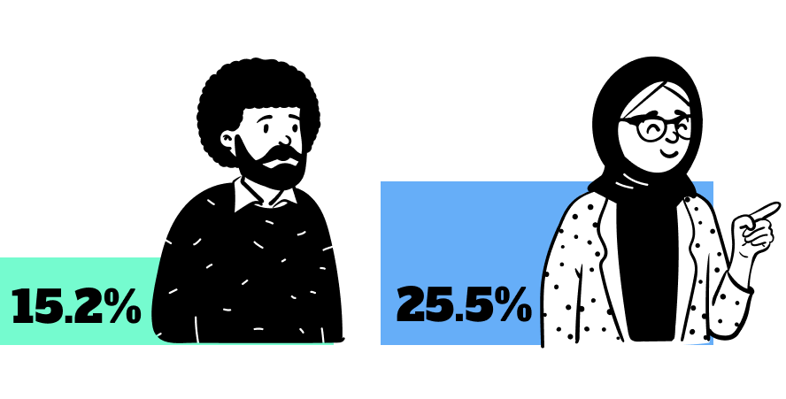
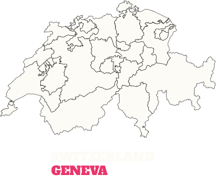
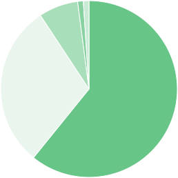
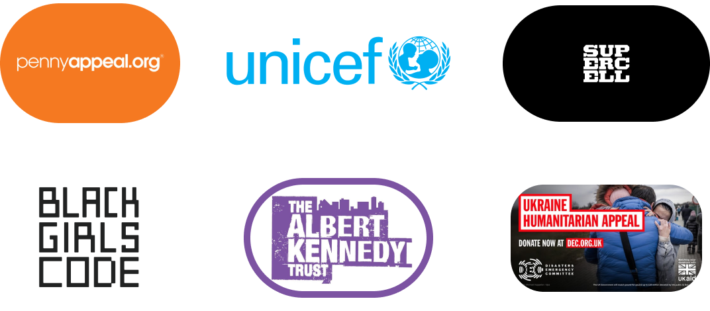
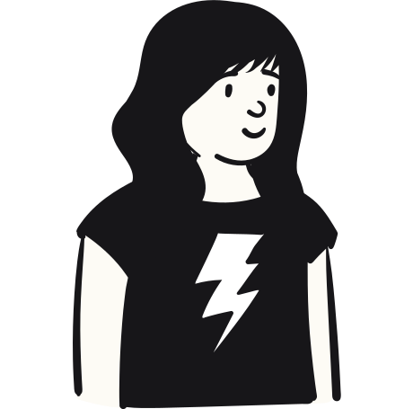
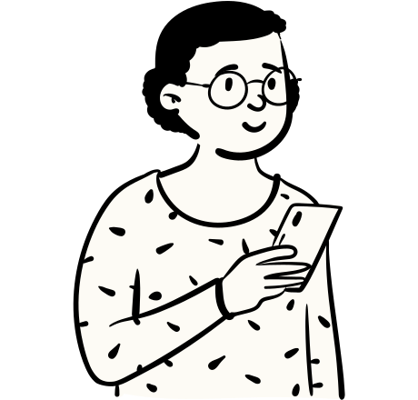
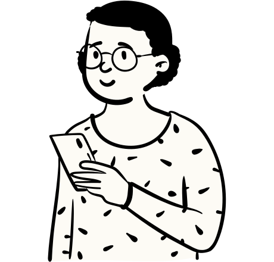
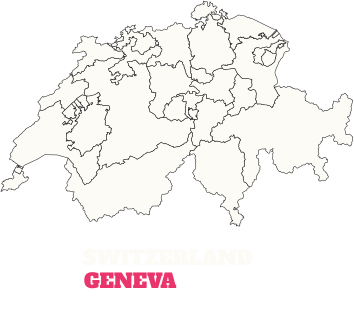
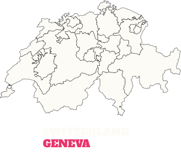

codebar is a global community empowering minorities to break into tech.
Since 2013, codebar has created opportunities for minority group members to pursue a career in tech. Over a span of 10 years, we have held more than 2,000 workshops and created a global community of over 25,000 students and coaches.
In this impact report, we assess how our initiatives have made careers in tech more accessible for minorities from all over the world.
This is achieved through findings captured in a community-wide survey, which will drive improvements in future initiatives that further our cause.
Our work is an answer to the diversity problem in tech.
Ethnic minorities make up only 15.2% of the tech labour market in the UK, while women are just slightly above that at 25.5%1. Diversity is still a major issue in the tech industry despite being one of the world’s fastest growing fields.

Through our initiatives, we provide education, training and networking opportunities for members of underrepresented groups in tech. We believe in the strength that diversity brings and the importance of diverse thinking in an industry where innovation is a constant.
Our global community
18,385 students and 6,512 coaches in 33 chapters worldwide

Gender

60.8%
Female
29.9%
Male
7.2%
Non-binary
1%
Trans female
1.1%
Other
Ethnicity
55.7%
White
17.5%
Asian
9.3%
Black
8.2%
Mixed
1%
Arab
4.1%
Other
4.2%
Undefined
Age
6.2%
18-24
41.2%
25-34
34%
35-44
12.4%
45-54
6.2%
55 and above
Highest level of education
4.1%
PhD
33%
Master's degree
45.4%
Bachelor's degree
7.2%
Diploma
1%
IB Diploma
6.2%
GCE A level
1%
GCE O level
1%
Other
1%
Undefined
23% identified as part of the LGBTQIA+ community
53% felt that codebar has also made a positive impact on their confidence
63% find that our community is helpful and specialised
55% of our community are returning members
Aside from the years when we were hit by the global pandemic, our community has seen a steady growth of new joiners.
New members per year
codebar's growth is 100% organic. Each chapter has started by someone in that location saying they want to make a difference. It's a huge testament to the amazing community and the demand for change in the tech industry
Kimberley Cook, Director of codebar
Industry partners
The lack of diversity in tech is an issue that has garnered increasingly more attention over the years.
More and more companies have been making commitments to bolster inclusivity and diversity in their organisation, complete with key goals that they have pledged to meet. These companies include Compare the Market, FT, Amazon, Google and more that codebar have partnered with in recent years.
671 industry partners in 10 years
Over 75% of companies have hosted more than 1 workshop
codebar bridges tech companies to a rich talent pool of untapped potential.
Through industry partnerships, we have been able to secure career opportunities for the codebar community.
In return, tech companies are able to gain access to a whole new talent pool of skilled prospective hires that bring so much to the table with their wealth of perspectives and experiences.
Big News, Bigger Opportunities
At the FT, gold-standard journalism is just the beginning. Their Product and Tech team keeps them ahead of the ever-changing digital landscape by delivering cutting-edge products to over one million digital subscribers every day. Their plans for growth rely on a diverse, dedicated and dynamic group of product, tech, delivery and data specialists - everyone’s welcome in their friendly, forward-thinking team.
As a new gold partner, they will play a significant role in helping our community adopt the skills they need to thrive in tech.
Hosted 2 panels
Organised 4 in-person workshops (and counting)
Employed 2 people through codebar Festival
Working together for the common good
codebar and Makers have a shared goal: To create a new generation of talent in tech. Makers offers bootcamps and apprenticeships for software engineers to jumpstart their careers.
By working together, both codebar and Makers are able to expand the opportunities available for minorities in tech.
Makers has been a community partner with us for 5 years. In that time, they have collaborated with us on events, educational initiatives, and even provided avenues for our community members to further their training.
Hosted 10 workshops
Ran 4 one-off events in their London office, including uncodebar 2023
Gave 29 codebar members full scholarships to their bootcamp
codebar has something for every community member to grow within a setting that suits them best. Over the years, our initiatives have grown from offering regular free workshops, to organising festivals, job fairs, and hosting community-run events.
When the world went into lockdown during the height of the COVID-19 pandemic, we shifted our initiatives online. The opportunity to learn from seasoned professionals from anywhere in the world was embraced by our community wholeheartedly, so much so that we have decided to move towards a hybrid way of running workshops and events - giving our community even more options to take them closer to their goals.
54% of our community did not work in tech before codebar
1/3 of codebar students go onto a career in tech
codebar workshops
It all started with our workshops! To make tech careers more accessible, we began running regular free programming workshops in October 2013. These workshops take place within numerous chapters all over the world and are led by developers who choose to volunteer as coaches with us.
Through our workshops, we have created vibrant, collaborative environments for minorities to learn HTML/CSS, JavaScript, Ruby, Python and Git. Companies partner with us to host these workshops at their space, therefore helping aspiring developers expand their industry exposure early in their careers.
Our workshops connect minorities to dedicated coaches who want to see them succeed.
2,035 workshops and counting
90% of community members have given us a 5 star rating after a workshop
codebar festival
First organised in 2021, codebar Festival is our annual 5-day hybrid event that focuses on 3 key areas - coding, career and wellbeing. Attendees get to attend talks, panels and workshops. They also get to network and apply for openings through the festival’s job fair.
After three successful years of running codebar Festival we are excited to be running it again in 2024.
1,900 total attendees
9.5 post-event survey score
codebar Festival empowers our community to take on a holistic approach to a tech career
Through codebar Festival, we have also raised £2,500 that has gone to these charities:

#uncodebar
uncodebar cultivates authentic spaces for genuine conversations and growth.
Now in its 9th year, uncodebar is an annual event that is 100% participant-led. It is our version of an unconference, which can be defined as a "loosely structured open space event emphasising the informal exchange of information and ideas between participants".
During uncodebar, community members propose talks, panels, workshops and decide which topics they’d like to focus on for the day before convening in separate breakout sessions. These topics include anything related to web development, software development, game development, learning, mentoring and community. Anyone is welcome to participate - whether you’re a seasoned developer or a first-time speaker.
uncodebar is a testament to the proactive and dedicated spirit of codebar. Everything lies in the hands of our community, and through their involvement, we grow and thrive as one. In 2023 we were so excited to bring this special event to more locations - Glasgow and Barcelona.
24 Pull Requests: Our annual open source event dedicated to helping students contribute to open source. Held at the beginning of December.
Mind the Code: A full-day event dedicated to coding exercises and yoga
Intro to Android development
Intro to iOS
Intro to React Native
Ladies that UX
Intro to DevOps
CODE // EXPLORE // CREATE //: A workshop in creative-coding, building a musical eco-system in which autonomous organisms roam, breed and feed, generating sound with their actions.
codebar hacks Monzo: A hackday using Mondo’s API to bring your ideas to life, with an opening lesson on how to use APIs.
Trans*Code: The UK’s first-ever hack event focused solely on drawing attention to transgender issues and opportunities.
Build your own Portfolio website
Micro:bit workshop
Kotlin Android Development Workshop
Teaching through Story-telling
CV workshop
Gender Pay Gap Data Hack
Git workshop
Kotlin Android Development Workshop
Practical 3D for the Web
Gender Pay Gap Data Hack
codebar gamedev afterwork
An exciting introduction to Machine Learning and Data Science for beginners
codebar is a genuine community and genuine people who aren't in it for anything else other than to drive change.
It's amazing to have a platform that connects students and coaches. My interaction with the students has demonstrated that there are lots of technical talent out there, who comes from non-tech backgrounds and this platforms gives those students an opportunity to move into tech.
From a coaching perspective, codebar has helped me feel more confident in my skills when I help someone else solve a problem. I also love seeing how people who are new to tech are so interested and excited about its capabilities and it's very infectious!
codebar puts together learners and real developers. I initially came to codebar as a student and I was stuck in tutorial hell. Having someone IRL explain things to me made learning so much easier.
To me, codebar feels like a safe space to help people learn to code for the first time. It opens up networks between coaches and students which can build professional relationships outside of the codebar community to open up career opportunities.
Students
I met role models. I saw that developers are socially engaged and willing to help others, instead of the 'autistic hacker' idea that many people have. I met people from companies, telling me I can do what they do. I am quite a bit older than most and still the encouragement was there: Go for it.

It's great that codebar continues to provide an open opportunity for people to try some tech and see what it's like. The more diverse the people within the industry the better the software is generated which can only help
the industry.
I feel like I now have a place to go with my questions and a community that I can be part of where i see myself being represented. This is the first time that i've found this and i'm so excited to continue being a member.
I found the teaching and space to be inclusive and gentle which is exactly what I needed to start learning.
Codebar coaches are extremely dedicated, respectful, friendly and experienced individuals who really encourage students and are willing to give up their time to give advice and support that makes a massive difference to students.
Career switchers
I have gone from being a student (having been encouraged by people at work to go), to organising my local chapter and now coding full time for my job. codebar had a huge role in that, making me feel there was a place in the tech community for me and increasing my confidence that I could be a developer.

Before codebar I was an Elementary School teacher. I attended out of curiosity and it led me to find a more complete course in coding and eventually found a job in the industry.
codebar gave me an initial boost learning python. I attended something like 10-15 workshops where I received excellent instruction from the coaches. This gave me the skills and confidence to work on my own projects, and I eventually got a job in tech about a year later.
I managed to gain confidence to complete most of my university tasks and apply for tech roles. Got help with
interview readiness which has helped me land an internship with Marsh as a Cyber Security Analyst.
I found my current job through Codebar festival. I've met a wide range of incredibly knowledgeable and empathic mentors who have helped me with all aspects of my career development. It has made me feel more like I belong in tech and that my presence is valuable there.
What's next for codebar?
We’ve had an amazing 10 years, and we’re excited to keep providing opportunities for minorities to break into tech in 2024.
codebar has made a huge difference to the tech industry so far - placing thousands of people in tech jobs and building an inclusive and supportive community.
There’s still lots more we can do to address the industry’s diversity issue, and as an organisation that puts our community first, we’ll be working closely with our members to evolve our offerings.
One big focus for us in 2024 is offering more career opportunities to our community. Getting the first job is always the hardest, so we’re going to work closely with some of our amazing partners to offer more career opportunities for our community.
Everyone at codebar wants to say the biggest thank you to every single person who has ever attended, or volunteered at one of our events. We would not have been able to teach over 18,000 people if it were not for your amazing support of everything we do. You really are the backbone to everything we do!
We also want to give a big thank you to all the companies who have supported us over the last 10 years, your support of our mission has made tech a more inclusive industry to be involved in.
We look forward to many more years of teaching people to code for free.


 
